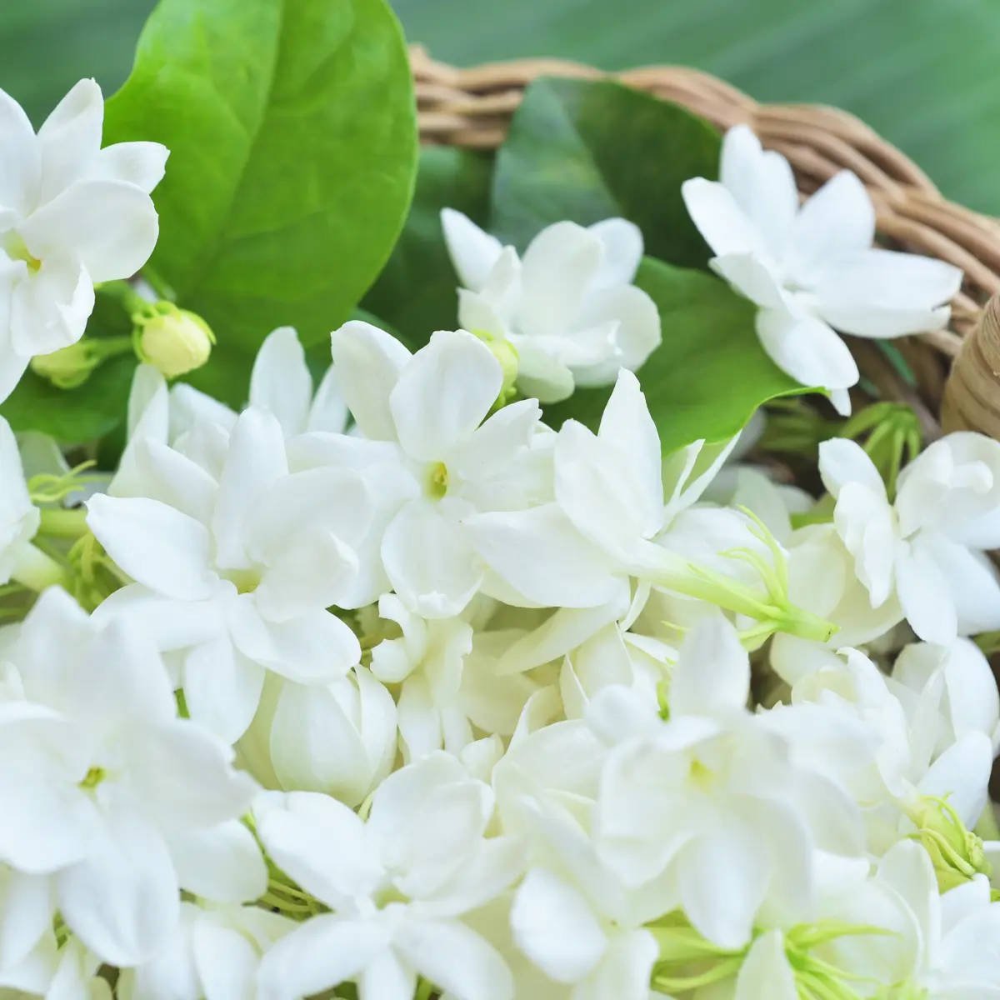
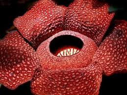
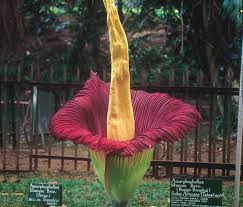
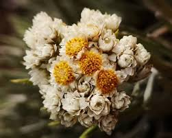

Indonesia dikenal sebagai negara yang kaya akan keanekaragaman hayati, dan salah satu keindahan alamnya tercermin dalam beragam jenis bunga yang tumbuh di berbagai wilayahnya. Dari pegunungan hingga dataran rendah, dari Sabang sampai Merauke, berbagai spesies bunga dengan keunikan dan pesonanya masing-masing dapat ditemukan di seluruh penjuru nusantara. Keindahan bunga-bunga ini tidak hanya menjadi daya tarik wisata, tetapi juga berperan penting dalam menjaga keseimbangan ekosistem dan menjadi bagian tak terpisahkan dari warisan alam Indonesia. Berikut adalah beberapa bunga ciri khas Indonesia:
 Bunga melati, atau dalam bahasa ilmiahnya Jasminum, adalah permata flora Nusantara yang begitu dikagumi. Dengan kuntumnya yang mungil dan harumnya yang khas, bunga ini telah menjadi simbol kesucian, keindahan, dan keanggunan dalam budaya Indonesia. Melati sering digunakan dalam berbagai upacara adat, seperti pernikahan dan perayaan keagamaan. Selain keindahannya, bunga melati juga memiliki beragam manfaat, mulai dari bahan pembuatan minyak wangi hingga pengobatan tradisional. Keharuman melati yang menenangkan juga sering digunakan dalam aromaterapi untuk mengurangi stres dan meningkatkan kualitas tidur.
 Rafflesia Arnoldii, si bunga raksasa asal Indonesia, adalah salah satu keajaiban alam yang unik dan langka. Dikenal sebagai bunga terbesar di dunia, Rafflesia Arnoldii memiliki ukuran yang sangat mengesankan dan bentuknya yang khas. Meskipun memiliki keindahan yang memukau, bunga ini justru mengeluarkan bau busuk yang menyengat untuk menarik serangga penyerbuk. Habitatnya yang terbatas di hutan hujan tropis dan siklus hidupnya yang panjang membuat bunga ini sangat rentan terhadap kerusakan lingkungan. Oleh karena itu, Rafflesia Arnoldii menjadi salah satu spesies yang dilindungi dan menjadi ikon penting bagi pelestarian keanekaragaman hayati Indonesia.
 Bunga bangkai (Amorphophallus titanum) adalah keajaiban flora Indonesia yang terkenal dengan ukurannya yang sangat besar dan bau busuknya yang menyengat. Tumbuhan endemik Sumatera ini memiliki bunga majemuk terbesar di dunia, yang bisa mencapai tinggi beberapa meter. Mekarnya bunga bangkai adalah peristiwa langka dan selalu menarik perhatian banyak orang. Bau busuk yang dikeluarkannya berfungsi untuk menarik serangga penyerbuk, terutama kumbang. Meskipun penampilannya unik dan menarik, bunga bangkai juga rentan terhadap kerusakan habitat sehingga perlu dilestarikan agar keindahan alam Indonesia tetap terjaga.
 Bunga Edelweis Jawa (Anaphalis javanica) adalah permata flora pegunungan tinggi Indonesia. Dikenal sebagai "bunga abadi", Edelweis Jawa memiliki kemampuan unik untuk bertahan hidup di lingkungan ekstrem seperti lereng gunung yang tandus dan berangin. Bunganya yang berwarna putih keperakan dan bentuknya yang khas membuatnya terlihat begitu anggun. Sayangnya, keindahan Edelweis Jawa membuatnya sering dipetik oleh pengunjung gunung, sehingga populasinya semakin terancam. Oleh karena itu, Edelweis Jawa kini menjadi spesies yang dilindungi dan menjadi simbol penting bagi upaya pelestarian alam pegunungan Indonesia.
Mengingat besarnya peran dan nilai penting keanekaragaman bunga di Indonesia, sudah sepatutnya kita sebagai generasi penerus bangsa turut berperan aktif dalam melestarikan warisan alam yang tak ternilai ini. Upaya pelestarian dapat dimulai dari hal-hal sederhana seperti tidak memetik bunga sembarangan, mendukung program konservasi, hingga mengedukasi masyarakat tentang pentingnya menjaga kelangsungan hidup berbagai spesies bunga. Dengan komitmen bersama dalam menjaga dan melindungi kekayaan flora Indonesia, kita dapat memastikan bahwa keindahan dan manfaat dari beragam jenis bunga ini dapat terus dinikmati oleh generasi yang akan datang, sekaligus menjaga keseimbangan ekosistem yang telah terjalin selama ribuan tahun di bumi Nusantara.